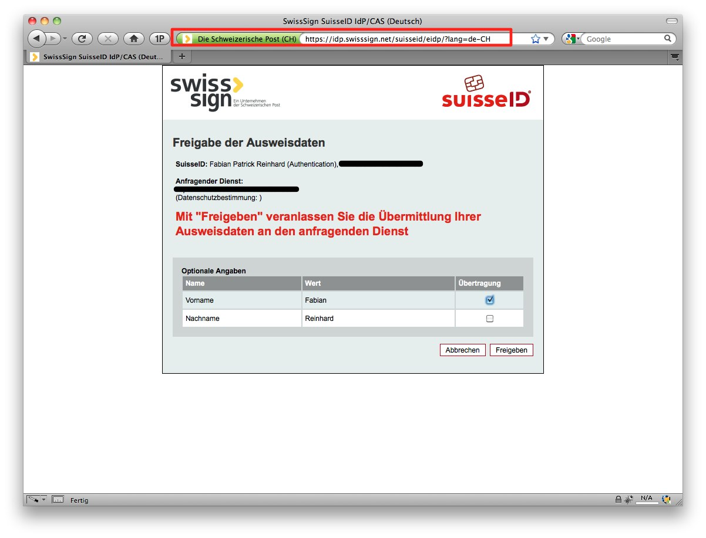

08.10.2010
SuisseID ad absurdum
Wir sind gerade dabei die Implementierung der SuisseID für Plone umzusetzen und mussten dabei feststellen, dass bestehende Implementierungen die Idee hinter einer Authentifizierung wie der SuisseID nicht respektieren.
Nachtrag (12.10.2010) Es geht uns in dieser Darstellung einzig um die Art und Weise wie Service-Provider die Authentifizierung implementieren. Es geht nicht um eine generelle Kritik an der SuisseID. Wir sind auch bemüht unsere Darstellung nach Kommentaren entsprechend zu ergänzen und zu präzisieren. Vielen Dank für die gute Diskussion!
Vorbemerkung: Es geht uns hier nicht um eine grundlegende Kritik an zertifikatbasierter Authentifizierung oder SAML2, sondern darum wie SuisseID-Authentifizierungen implementiert sind.
Ergänzung (14.10.2010): Die SuisseID sieht folgende Einsatzszenarien vor:
- Authentifizierung rein Zertifikats-basiert
- Authentifizierung via einen IdP (Identity Provider)
- Abfrage von Attributen der SuisseID via einen IdP
Auch Kombinationen sind zulässig. Die direkte Authentifizierung mittels des SuisseID-Zertifikates scheint uns für Internetanwendungen, aus den unten genannten Gründen, nach wie vor problematisch.
Vielen Dank für den entsprechenden Kommentar!
#
Ablauf 1: Wie es sein sollte!
Hier mal der Prozess der Authentifizierung mit SuisseID für unsere Plone-Site. Ich sehe in der rechten Spalte eine Login-Box, in der ich mich mit meiner SuisseID anmelden kann.
 Im Dropdown muss
ich den SuisseID-Provider wählen. Zur Zeit vergeben SwissSign und QuoVadis
SuisseIDs. Wie wir später sehen werden ist es wichtig, dass ich als Benutzer
diese Auswahl selbst treffe und diese nicht irgendwie automatisch passiert.
Im Dropdown muss
ich den SuisseID-Provider wählen. Zur Zeit vergeben SwissSign und QuoVadis
SuisseIDs. Wie wir später sehen werden ist es wichtig, dass ich als Benutzer
diese Auswahl selbst treffe und diese nicht irgendwie automatisch passiert.
Nachdem ich meinen Provider gewählt habe, werde ich auf die Site von SwissSign weitergeleitet. Da ich mich nun bei SwissSign authentifizieren muss, fragt mich mein Browser nach dem Passwort meiner SuisseID.

Ich gebe dieses ein und sehe nun ein weiteres Fenster, das mir mitteilt, an wen mein Zertifikat und damit auch einige persönliche Daten übermittelt werden. Ich sehe, dass es sich beim Empfänger um SwissSign handelt und da ich meinem Identitätsprovider vertraue, bin ich mit der Übermittlung einverstanden.

Als Benutzer werde ich nun in der Adressbar des Browsers schauen, ob ich wirklich auf der Site von SwissSign bin. Die grüne Adresszeile zeigt mir an, dass dies der Fall ist und dass die Site per SSL verschlüsselt ist. Es ist zentral, dass diese Seite bei SwissSign läuft. Man kann diesen Schritt nicht überspringen, da ich nur meinem eigenen Identitätsprovider vetraue und damit nur dieser mich authentifizieren kann und darf.

Ich kann nun auch wählen welche Infos (Vorname, Nachname) ich zurück an unsere Plone Site übertragen will. Ich klicke also auf "Freigeben" und komme zurück auf die Plone Site wo ich nun angemeldet bin. Wenn ich hier "Abbrechen" klicke, dann werden überhaupt keine Daten an den anfragenden Dienst übermittelt.
"Bin ich schon drin?" Ja, ich bin nun bei der Plone Site angemeldet. Alles bestens also! So bin ich auf der absolut sicheren Seite, weil ich nur meinem Provider Zugriff auf meine Daten gegeben habe.
Ablauf 2: Wie es besser nicht sein sollte!
Nun schauen wir uns ein Beispiel an, welches gegen die Idee dieser Authentifizierung - seine Daten übermittelt man ausschliesslich an seinen Provider - verstösst. Als zweites Beispiel schauen wir uns eine Applikation an, wo die Authentifizierung anders abläuft. (Korrektur 14.10.2010 vgl. Kommentar)
Ich kicke auf den SuisseID-Button und HOPPLA werde nach dem Passwort meines Zertifikates gefragt!

Der Weinladen verlangt also nach meinem Zertifikat. Das finde ich nicht so toll, denn eigentlich wollte ich meine email-Adresse und meinen vollen Namen nicht an den Weinshop (bzw. das SECO) übermitteln, da sich diese Informationen jedoch im Zertifikat befinden, werden sie ans SECO übermittelt!

Eigentlich sollte der Weinshop jedoch nur mein Alter überprüfen. Dazu werde ich korrekterweise auf die Seite meines Identitätsproviders (in diesem Fall SwissSign) weitergeleitet:

Falls ich der Datenübermittlung zustimme, sendet SwissSign nur gerade diese Information (Nachweis dass ich älter als 18 bin) an den Weinshop. Was in diesem Ablauf nicht optimal läuft, ist dass der Wineshop selbst auf mein Zertifikat zugreift, um mir die manuelle Auswahl des Providers zu ersparen. Indem er das jedoch tut, wird gleichzeitig auch meine Email Adresse (und mein Arbeitgeber, der auf meinem persönlichen Zertifikat gespeichert ist) ausgelesen. Die Idee hinter einem Verfahren wie der SuisseID ist, dass ich nur meinem Indentitätsprovider voll vetrauen muss, und dieser vor jeder Datenübermittlung meine Zustimmung einholt. Somit sollte ich auch nur meinem Identitätsprovider Zugriff auf mein Authentifizierungszertifikat gewähren.
 Verlangt
jedoch bereits der Weinshop Zugriff auf mein Zertifikat und ich die darin
enthaltenen persönlichen Daten nicht an ihn übermitteln will, so bleibt nur
die Möglichkeit die Authentifizierung mittels SuisseID abzubrechen!
Verlangt
jedoch bereits der Weinshop Zugriff auf mein Zertifikat und ich die darin
enthaltenen persönlichen Daten nicht an ihn übermitteln will, so bleibt nur
die Möglichkeit die Authentifizierung mittels SuisseID abzubrechen!
Ich muss zudem die Sicherheitseinstellungen in meinem Browser so setzen, dass ich jedes mal explizit ein Zertifikat auswählen möchte, falls eine Website ein solches verlangt. Ansonsten kann jede Website mittels SSL auf alle Daten meines Zertifikats zugreifen ohne dass ich überhaupt etwas davon bemerke. Man könnte jetzt natürlich argumentieren, dass auf meinem Zertifikat keine wirklich heiklen Daten liegen, sondern dass diese bei meinem Indentitätsprovider hinterlegt sind. Das stimmt aber nur teilweise: Mein amtlich beglaubigter Name, meine Email Adresse und meine Organisation sagen doch schon einiges über mich aus. Ich will diese Infos nicht irgendeine beliebige Website schicken!
(Ergänzung 14.10.2010 vgl. Kommentar) Es handelt sich hier um eine Kombination der rein zertifikatsbasierten Authentifizierung mit der Abfrage von personenbezogenen Attributen beim IdP. Dies ist zwar zulässig, die Authentifizierung wäre jedoch wie in Ablauf 1 besser auch über den Identity Provider gelaufen, so hätte ich mein Zertifikat nur diesem zeigen müssen.
Ablauf 3: Wie es definitiv nicht sein sollte
Drittes Beispiel ist der Authentifizierungsprozess bei www.amazee.com.
Ich klicke als wiederum auf den SuisseID Button und werde - wie schon beim Weinshop - nach dem Passwort meines Zertifikates gefragt. Bemerkenswert ist hier, dass ich auf der Site von amazee bin und ich meine Daten an Clavid übermitteln werden sollen! Mit Clavid habe ich aber gar nichts am Hut, es handelt sich weder um die Seite bei der ich mich anmelden möchte (amazee) noch meinen Identitätsprovider (SwissSign). Trotzdem will Clavid auf mein Zertifikat und damit meine Daten zugreifen.

Man könnte, wie bereits beim zweiten Prozess, wiederum argumentieren, dass diese Daten nicht wirklich heikel sind.
Das wirklich bemerkenswerte passiert jedoch im nächsten Schritt. Ich komme nun auf eine Site die zwar derjenigen von SwissSign ähnlich sieht, hinter der sich aber Clavid versteckt!
An diesem Punkt ist für mich als sicherheitsbewusster Benutzer definitiv Feierabend! Ich sollte hier auf der Site meines Providers (SwissSign) sein. Clavid kenne ich nicht und vertraue der Seite daher auch nicht. Clavid übernimmt hier also die Rolle meines Identitätsproviders, obwohl ich für die Authentifizerung nur meinem wirklichen Identitätsprovider (SwissSign) vertrauen sollte. Clavid liest als Drittpartei also nicht nur mein Zerifikat aus sondern gibt sich auch noch als Identitätsprovider aus.
Die grundlegende Idee hinter dem der SuisseID zu Grunde liegenden Authentifizierungsverfahren besteht darin, dass ich mich nur auf der Seite meines Identitätsproviders (mit einem Zertifikat oder Passwort) anmelde und mich deshalb auch wirklich auf dieser Seite befinden muss (was ich an Hand der URL und des Zertifikat überprüfen kann). Dadurch ist der Prozess für den Benutzer transparent. Im Fall von amazee/Clavid ist jedoch völlig unklar ob und wie ich bei meinem Identitätsprovider authentifiziert werden. Bei Clavid handelt es sich nicht um einem authorisierten SuisseID Identitätsprovider und trotzdem übernimmt der Dienst meine Authentifizierung. Zusätzlich kann Clavid auch meine persönlichen Daten einsehen, obwohl ich nur der Übermittlung an amazee zugestimmt habe.
Entgegen aller meiner Grundsätze klicke ich mal auf OK und tatsächlich habe ich nun einen Account bei amazee.
(Ergänzung 14.10.2010 vgl. Kommentar) Es handelt sich hier (amazee möge mich korrigieren) um eine rein zertifikatsbasierte Authentifizierung, auch wenn die Seite für die "Freigabe" der Daten den entsprechenden Seiten der Identity Provider zum verwechseln ähnlich sieht.
Fazit - Bei der Implementierung die Idee des SuisseID-Prinzip (SAML2 oder
auch OpenID) ernst nehmen
Die unser Prozess für die Anmeldung mit der SuisseID zeigt, dass man das Zertifikat des Benutzers auf Seiten des anfragenden Services weder auslesen muss noch soll. Das Zertifikat wird erst auf der SSL-Seite von SwissSign ausgelesen. Unsere Plone Seite muss gar nicht wissen wie sich der Benutzer bei SwissSign oder QuoVadis authentifiziert. Das kann über ein Passwort, ein One Time Token oder eben ein Zertifikat geschehen. Wie das geschieht liegt aber in der Verantwortung des Identitätsproviders. Dem Serviceprovider (unsere Plone Seite) ist die Art der Authentifizierung egal er muss nur dem Identitätsprovider vetrauen (dass dieser eine sichere Authentifizierung durchführt). Das ist die grundlegende Idee hiner SAML2 oder auch OpenID.
Was der Idee widerspricht:
- Wenn jeder Serviceprovider rasch das Zertifikat des Benutzers ausliest (sei es auch nur um auf den passenden Provider weiterzuleiten). Der Endbenutzer muss so "erzogen" werden, dass er mit seinem Zertifikat sehr sorgfältig umgeht. Wenn nun inflationär im Browser die Frage nach dem Zugriff kommt, so legt er genau diese Vorsicht ab. Immer wenn er Zugriff auf sein Zertifikat gibt, so kann der Service-Provider persönliche Angaben wie die email-Adresse auslesen. Der Benutzer hat nicht wirklich eine Möglichkeit zu sagen, dass er diese Angabe nicht machen will (mehr zum Thema SuisseID und email-Adresse ein anderes Mal).
- Es dürfte keine "Pseudo"-Identitätsprovider wie Clavid geben, denn ich darf nur meinem Provider vertrauen.
- Was macht Clavid wirklich? Der Ablauf ist für uns unklar und intransparent und entspricht schon daher nicht der grundlegenden Idee des Protokolls